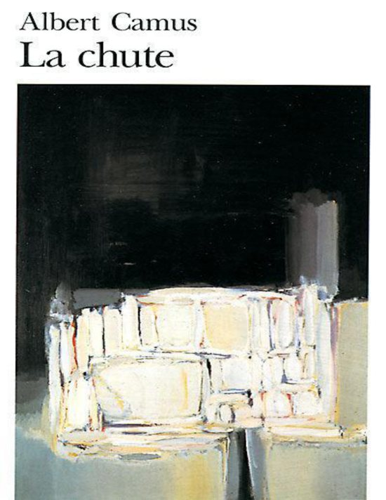

fiction
La Chute

Carte d’identité
- Auteur
- Albert Camus
- Genre
- fiction
- Pages PDF
- 81
Résumé du livre
À Amsterdam, Jean-Baptiste Clamence engage une conversation avec un interlocuteur silencieux. Ancien avocat parisien, il décrit d’abord une existence flatteuse, faite de générosité apparente, de réussite sociale et de bonne conscience. Au fil de son monologue, des souvenirs plus troubles ébranlent cette image : il découvre l’écart entre la vertu qu’il affichait et ses motivations profondes. Le récit se transforme en examen de la culpabilité, de l’hypocrisie et du besoin de juger autrui. Camus construit une confession ambiguë : en s’accusant, Clamence cherche aussi à entraîner son auditeur dans une culpabilité commune.
Sections du livre · 3 repères paginés
Repères fondés sur les titres et passages du PDF original. Ce sont des extraits de navigation, pas des résumés analytiques de chaque chapitre.
01Récit continu — débutPDF p. 9
Repère tiré du texte : Puis-je, monsieur, vous proposer mes services, sans risquer d’être importun ? Je crains que vous ne sachiez vous faire entendre de l’estimable gorille qui préside aux destinées de cet établissement. Il ne parle, en effet, que le hollandais. A moins que vous ne m’autorisiez à plaider votre cause, il ne devinera pas que vous désirez du genièvre. Voilà, j’ose…
Lire le PDF ↗02Récit continu — milieuPDF p. 35
Repère tiré du texte : J’apprenais du moins que je n’étais du côté des coupables, des accusés, que dans la mesure exacte où leur faute ne me causait aucun dommage. Leur culpabilité me rendait éloquent parce que je n’en étais pas la victime. Quand j’étais menacé, je ne devenais pas seulement un juge à mon tour, mais plus encore : un maître irascible qui voulait, hors de toute loi,…
Lire le PDF ↗03Récit continu — finPDF p. 60
Repère tiré du texte : elle a consenti depuis à écrire ses souvenirs pour un journal confessionnel très ouvert aux idées modernes. La jeune fille, de son côté, s’est mariée pour satisfaire ses instincts débridés et donner un emploi à des dons remarquables. Je ne suis pas peu fier non plus d’avoir été accueilli comme un égal, à cette époque, par une corporation masculine trop…
Lire le PDF ↗